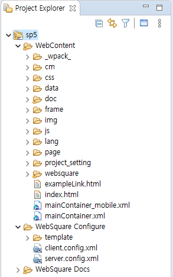

이 문서는 WebSquare5 예제 프로젝트(사이트)에 구성된 예제에 대한 가이드를 담고 있습니다. 대략적인 문서의 구성은 다음과 같습니다. (예제에 따라 문서의 구성이 바뀔 수 있습니다.)
예제 개요
구현된 기능
테스트 방법
구현 예시
주요 API
참고 문서 및 영상
각 예제 가이드는 작성된 예제 파일과 함께 보는 것을 권장합니다. 예제 파일은 문서 내 링크를 통해 실행이 가능하며, 아래의 온라인 예제 사이트를 통해서도 제공하고 있습니다. 온라인 예제 사이트 링크 : https://example.websquare.kr
문서 내 오탈자, 오동작하는 예제가 있는 경우 가이드 문서 내 댓글을 남겨주시거나 아래의 메일로 보내주시면 검토 후 빠르게 반영하도록 하겠습니다. 메일 주소 : g_edu@inswave.com
WebSquare5 예제 프로젝트는 개발자들이 외부 네트워크의 사용이 불가능한 환경에서도 예제 파일을 쉽게 참고할 수 있도록 지원하기 위해 만들어졌습니다.
WebSquare5 Studio에서 서버의 구성 없이 구성하고 실행할 수 있습니다.(스튜디오 내장 서버 사용)
프로젝트는 서버의 설정 및 서버 모듈이 필요 없는 예제로 구성되어있습니다. (서버 모듈과 함께 구성된 프로젝트를 원하시는 경우 본사 기술지원팀을 통해 WRM 프로젝트를 요청하시기 바랍니다.)
예제들의 구성은 컴포넌트의 API가 약 90%, 성능 비교 예제 및 복합 기능 예제 등이 약 10%의 비율로 구성되어 있습니다.
컴포넌트 API 예제는 가능한 한 기능 적용 전후를 비교할 수 있도록 구성하였고, 예제 가이드 문서가 작성되어 있습니다.
그외 예제(성능 비교, 복합 UI 구성 등)는 내용에 따라 예제 가이드 문서가 제공되지 않을 수 있습니다.
예제 작성 이후 API의 기능이 추가되거나 수정된 경우, 예제 가이드 문서와 예제 화면에서의 API 설명이 현행화가 되지 않은 경우가 있습니다. 관련 내용을 전달해주시면 검토 후 빠른 시일 내로 반영하도록 하겠습니다. (메일 주소 : g_edu@inswave.com)
현재 컴포넌트의 모든 API의 예제가 포함되어 있지는 않습니다.
API 예제는 지속적으로 업데이트 될 예정입니다.
구분 | 설명 |
|---|---|
웹스퀘어 엔진 최소 버전 | 5.0_5.4877A.20230405.131227 |
스튜디오 최소 버전 | Version: 5.0.5 (Service Pack 5) Build date: 20221026 |
이 프로젝트는 WebSquare SP4 버전 이하의 엔진과 스튜디오에서는 지원되지 않습니다.
- 프로젝트 리소스는 예제 파일에 한해서만 기술 지원이 가능합니다.
(프로젝트의 예제 파일 경로 : WebContent/page/ )
- 예제 사이트를 구성하기 위해 작성된 공통 모듈은 기술 지원이 되지 않습니다.
(제공된 리소스의 사용으로 인해 발생하는 직접적, 간접적, 특수 또는 결과적 손해에 대한 책임을 지지 않습니다.)
작성이 필요합니다. 스튜디오에서 예제 프로젝트 구성하는 방법이 작성될 예정입니다.
예제 프로젝트의 폴더 및 파일에 대한 간략한 설명입니다. 최대 2Depth까지 작성되었습니다.
타입 | 이름 | 설명 |
|---|---|---|
폴더 | WebContent | 웹 리소스 영역. |
폴더 | └ _wpack_ | WebSquare XML 파일이 js로 변환되는 영역. |
폴더 | └ cm | 프로젝트 공통 리소스 영역. |
폴더 | └ css | 예제 파일에서 사용되는 css 파일 영역. |
폴더 | └ data | 예제 파일에서 사용되는 data 파일 영역. |
폴더 | └ doc | 예제 파일의 가이드 문서 파일 영역. |
폴더 | └ frame | 프로젝트 공통 리소스 영역. |
폴더 | └ img | 예제 파일에서 사용된 이미지 파일 영역. |
폴더 | └ js | 예제 파일에서 사용된 JS 파일 영역. |
폴더 | └ lang | WebSquare의 클라이언트 다국어 언어 파일 영역. config.xml에 해당 경로가 지정되어 있음. |
폴더 | └ page | 예제 파일(WebSqure XML) 영역. |
폴더 | └ project_setting | 프로젝트 설정의 참고 파일 영역. |
폴더 | └ websquare | WebSquare 엔진에서 사요하는 리소스 영역 |
파일 | └ exampleLink.html | 예제 파일 바로가기 파일. ex) /link.html?p=P00001 |
파일 | └ index.html | 프로젝트 진입 파일. 디바이스(PC, Mobile)를 판단하여 분기 처리. ex) /index.html |
파일 | └ mainContainer_mobile.xml | 예제 프로젝트 Mobile MAIN 파일. |
파일 | └ mainContainer.xml | 예제 프로젝트 PC MAIN 파일. |
폴더 | WebSquare Configure | Websquare 엔진 설정 파일 영역. 설정 파일을 링크하여 편집을 제공함. |
파일 | └ client.config.xml | WebSquare Client 설정 파일. |
파일 | └ server.config.xml | WebSquare Server 설정 파일. |
웹스퀘어 스튜디오의 [Project Explorer] 창 예시

예제 프로젝트는 별도의 Java 프로그램이 포함되어 있지 않습니다.
프로젝트 유형이 WebSquareProject입니다.